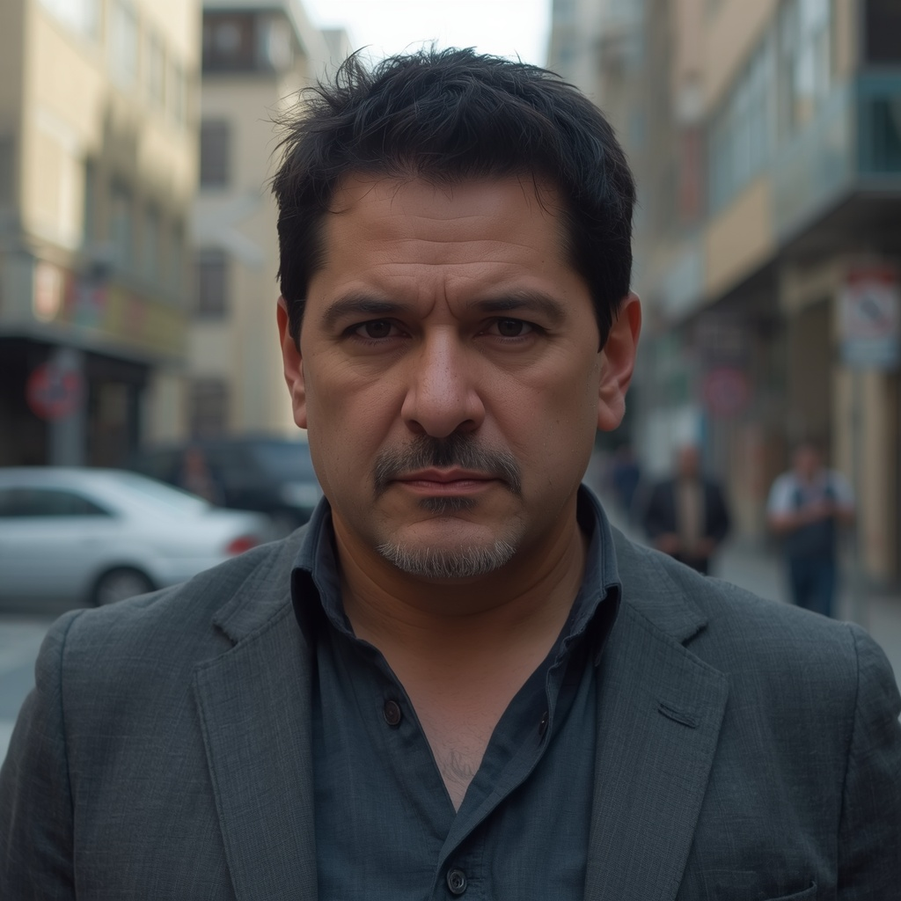

Título destacado
Esperando datos desde Sheets.
Leer notaUn archivo con opinión, ironía y bastante mala educación bien administrada.
LADO D es un archivo con opinión. No venimos a dar cátedra: miramos la realidad argentina con ironía, humor negro y una sonrisa medio torcida. Si algo nos parece brillante, lo decimos; si algo nos parece ridículo, también.
Esperando datos desde Sheets.
Leer notaAcá podés embebir el feed, 3 posts destacados o un bloque con el último contenido.

Sostener una página lleva más ganas que glamour.
Invitame un café